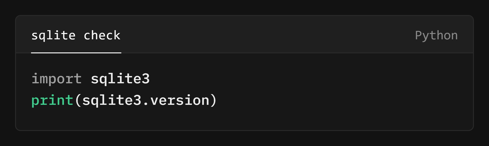
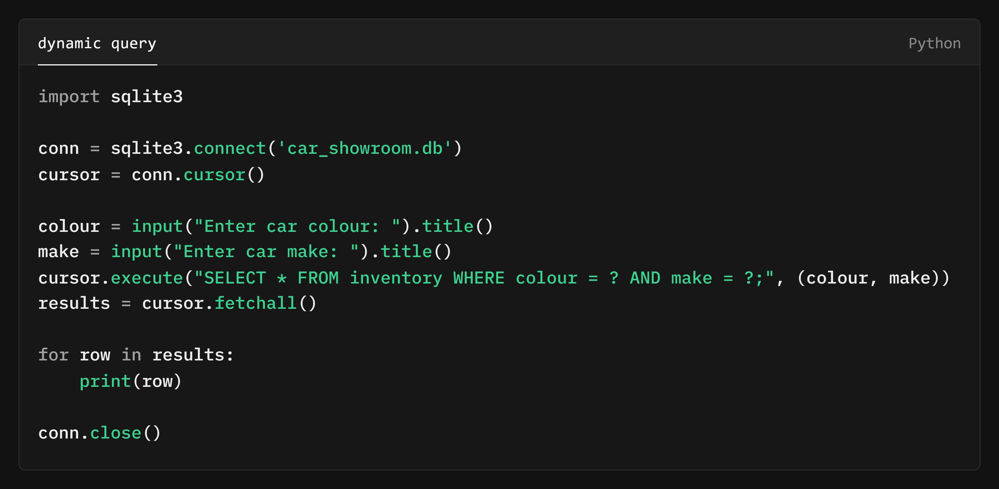

In this lesson, we'll move on from the user-friendly graphical interface of DB Browser and explore the more practical world of interacting with SQLite databases through Python scripts. Our focus will be on a database of American cars for sale. We'll cover:
 Why Python?
Why Python?
While tools like DB Browser offer a convenient way to explore and manipulate SQLite databases, most real-world applications don't involve direct user interaction with the database. Instead, databases are often accessed and managed through programming languages like Python.
Python, with its clear syntax and extensive libraries, provides an ideal environment for working with SQLite. It allows you to:
By combining the efficiency of SQLite with the versatility of Python, you can create powerful applications that manage data with ease and precision.
Hopefully, you've already installed Python on your system. If not, a quick visit to the Python website will set you on the right path. Once you have Python installed, you should find that sqlite3 is included in the standard library.
 Task: Check for SQLite
Task: Check for SQLite
Check for the presence of the sqlite3 module by running the following code in a Python script:

If the code runs without errors and prints the version of the sqlite3 module, you have the necessary libraries installed.
With our environment set up, we can now start executing SQL queries from our Python script. Let's begin with a simple example, retrieving all records from the "inventory" table in the "car_showroom.db" database found in Lesson 3 resource folder.
Task: Retrieve All Cars
If this works, you should be presented with a very long list of cars and their details. Congratulations! You've successfully run a SQL query from a Python script.
Problem solving tip:
if your IDE gives you an error like:
sqlite3.OperationalError: no such table: inventory,
make sure you are in the correct directory where the database is
located. Alternatively, try running the script from IDLE.
Understanding the
show_inventory.py script
Let's break down what's happening in this Python script step-by-step:
import sqlite3: This line imports the sqlite3 library, which
provides the necessary tools for
interacting with SQLite databases
from your Python code.
conn = sqlite3.connect('car_showroom.db'): This establishes a
connection to the
"car_showroom.db" database. Think of it as opening the database
file so you can work with it.
cursor = conn.cursor(): This creates a cursor object. The cursor acts as an
intermediary between your script
and the database, allowing you to execute SQL commands and fetch
results.
cursor.execute("SELECT * FROM inventory;"): This line executes the SQL query
SELECT * FROM inventory, which retrieves
all records from the "inventory" table.
results = cursor.fetchall(): This fetches all the results from the executed query and
stores them in the results variable. The results
are typically returned as a list of tuples, where each tuple
represents a row in the
table.
for row in results: print(row): This loop iterates through each row in the
results and prints it to the console.
conn.close(): This line closes the connection to the database, ensuring
that any resources held by the connection are
released.
In essence, this script demonstrates the fundamental steps of interacting with an SQLite database from a Python script: connecting to the database, creating a cursor, executing a query, fetching the results, and closing the connection.
Now that you've successfully retrieved all cars from the inventory
table, try experimenting with other SQL queries in your Python
script. You only need to modify the SQL query inside
cursor.execute() to retrieve specific data.
Task: Modify the Query to
retrieve specific data
As in previous lessons try this on your own and peak at the answers of you really need to or to check. Remember. You only need to edit line 5.
cursor.execute("SELECT * FROM inventory WHERE make = 'Toyota'")cursor.execute("SELECT make, model, model_year FROM inventory WHERE year = 2019")cursor.execute("SELECT * FROM inventory WHERE price BETWEEN 20000 AND 30000")AND keyword to combine multiple conditions.
cursor.execute("SELECT * FROM inventory WHERE make = 'Ford' AND model_year BETWEEN 2022 AND 2024 and colour = 'Green' and price > 10000")You can see how easy it is to modify the SQL query to retrieve data using Python. This flexibility allows you to tailor your queries to specific requirements and extract the information you need from the database.
Why both double and
single quotes?
In the examples above, you may have noticed that the
SQL queries
use both double quotes (") and single quotes
(') to enclose strings.
This is because the cursor.execute() function in
Python requires the SQL query to be
passed as a string.
Since the SQL query itself often contains single quotes (e.g.,
WHERE colour = 'Red'), we use double quotes to
enclose the entire query string in Python. This avoids
confusion
and ensures that the query is passed correctly to the database.
If your SQL query doesn't contain any single quotes, you could use either single or double quotes to enclose the query string in Python. However, using double quotes consistently for SQL queries can improve readability and avoid potential errors.
While executing hardcoded SQL queries can be useful, the true power of using Python with SQLite lies in the ability to construct dynamic queries based on user input or other variables. Let's create a script that takes user input for car colour and make, and then retrieves matching cars from the database.
Task: Find Cars by Colour
and Make
Modify your Python script as follows:

This script prompts the user for car colour and make, constructs a
SQL query with these inputs, and prints the matching cars. Notice
the use of ? placeholders in the query to prevent SQL
injection vulnerabilities.
Hopefully, this approach has given you a taste of the power and flexibility of constructing dynamic queries in Python. By taking user input and incorporating it into your SQL queries, you can create applications that respond to user needs and provide tailored results from the database.
Handling User Input
When constructing dynamic queries based on user input, it's essential to ensure that the input matches the structure of your database. In our "car_showroom.db" database, the "colour" and "make" fields have the first letter capitalised (e.g., "Red", "Toyota").
To ensure consistency, we use the
.title() method in Python to convert the user's input
to title case. This ensures that even if the user enters "red" or
"toyota", the query will still function correctly, as it will be
transformed to "Red" and "Toyota" before being used in the query.
Failing to account for such discrepancies can lead to queries returning no results, even if matching cars exist in the database. Attention to detail in handling user input is crucial for building robust and reliable database applications.
Before moving on to the next lesson, consider how you could expand on the dynamic query script.
Task: Enhance the Dynamic
Query Script
Here are a few ideas to get you started:
In this lesson, we've ventured beyond the graphical interface and explored the practical realm of interacting with SQLite databases through Python scripts. We've learned how to set up our environment, execute basic SQL queries, and construct dynamic queries based on user input. While the intricacies of database programming remain vast, we've gained a solid foundation for further exploration and a sense of quiet confidence in our ability to harness the combined power of Python and SQLite.